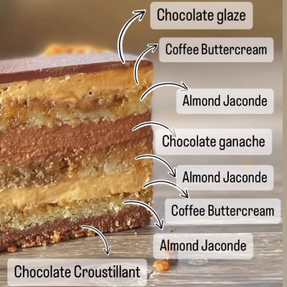
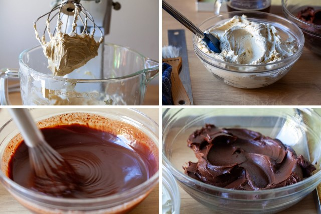
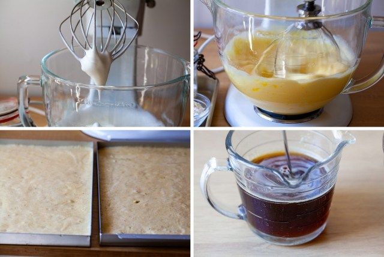
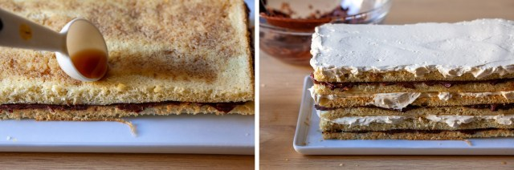
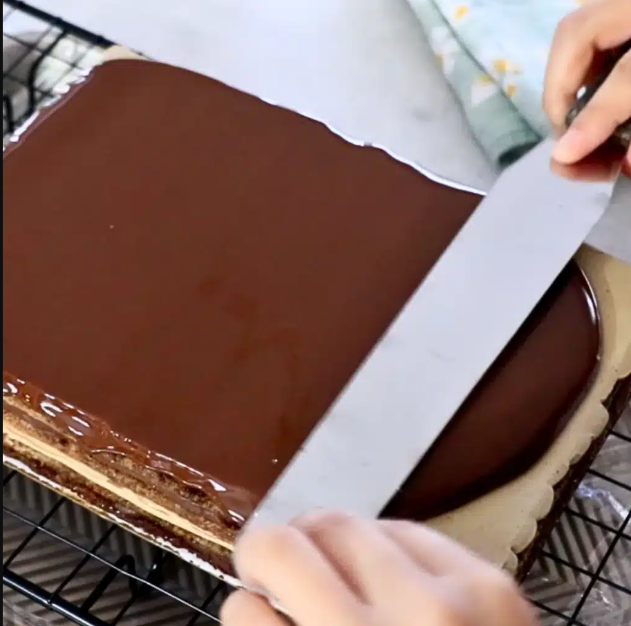
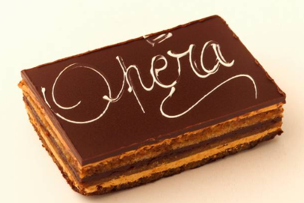

Recipe Details
- Category: International Pastry / French Patisserie Classique
- Difficulty Level: Advanced (Professional / Culinary School Level)
- Prep Time: 90 minutes
- Cook Time: 10 minutes
- Chill/Set Time: 2 - 4 hours
- Yield: 1 rectangular Opera Cake (approximately 18-20 portions)
- Servings: 18 - 20 portions
- Estimated Skill Focus: Precision baking, temperature control, layered assembly
- Allergen Notice: Contains gluten, eggs, dairy, nuts (almond)
The Opera Cake (Gateau Opera) is a Classic French layered pastry composed of almond joconde sponge, coffee syrup, coffee French buttercream, dark chocolate ganache, and a chocolate glaze. Precision, balance, and clean execution are critical to meeting international patisserie standards.
Characteristic features include:
- Thin, even layers (typically 6-8)
- Balanced bitterness (coffee & dark chocolate)
- Sharp, clean edges and glossy finish

Internal structure of a classic Opera cake (layer-by-layer)
This pastry is produced in five independent componet, assembled in a controlled sequence:
- Joconde Sponge (Almond Sponge)
- Coffee Syrup
- Coffee French Buttercream
- Dark Chocolate Ganache
- Chocolate Glaze (Glacage)
Each component much be prepared separately and held under correct conditions before assembly.


Opera cake components prepared independently before final assembly
- Joconde Sponge (Almond Sponge)
- Almond flour (fine, blanched): 150g
- Icing sugar: 150g
- Whole eggs (room temperature): 5
- Egg whites: 4
- Granulated sugar: 30g
- All-purpose flour: 45g
- Unsalted butter (melted, cooled): 30g
- Coffee Syrup
- Water: 120ml
- Granulated sugar: 80g
- Strong espresso or coffee extract: 20ml
- Coffee French Buttercream
- Egg yolk: 5
- Water: 60ml
- Unsalted butter (soft, 18-20°C)
- Coffee extract: 15ml-20ml
- Dark Chocolate Ganache
- Dark chocolate (60%-70% cocoa): 250g
- Heavy cream (35% fat): 200ml
- Unsalted butter: 40g
- Chocolate Glaze
- Dark Chocolate: 200g
- Neutral oil or cocoa butter: 40g
- Stand or hand mixer
- Silicone spatulas
- Offset palette knife
- Digital thermometer
- Baking trays (30 x 40 cm)
- Parchment paper or silicone mat
- Acetate sheet (recommended)
- Sharp pastry knife
- Joconde Sponge
- Preheat oven to 220°C (static heat).
- Whip whole eggs, icing sugar, and almond flour until pale and aerated (ribbon stage).
- In a separate bowl, whip egg whites with granulated sugar to medium-stiff peaks.
- Gently fold egg whites into almond mixture in three additions.
- Sift in flour and fold carefully.
- Fold in melted butter last.
- Spread evenly (~ 5mm thickness) on lined tray.
- Bake for 7-9 minutes until lightly golden.
- Cool completely, then cut into 3 equal rectangles.
- Coffee Syrup
- Heat water and sugar until fully dissolved.
- Remove from heat and add coffee extract.
- Cool to room temperature before use.
- Coffee French Buttercream
- Cook sugar and water to 118°C.
- Whisk egg yolks on medium speed.
- Slowly pour hot syrup into yolks while mixing.
- Continue whipping until bowl is cool.
- Gradually add butter, mixing until smooth and emulsified.
- Add coffee extract and mix until homogeneous.
- Chocolate Ganache
- Bring cream to a gentle simmer.
- Pour over chopped chocolate.
- Rest 1 minute, then emulsify gently.
- Add butter and mix until glossy.
- Cool to spreadable consistency (approximately 30°C - 32°C).

Assembly process of a classic Opera cake

Simple coffee syrup — fully dissolved, no caramelisation

Sugar syrup cooked precisely to 118°C
Finished coffee French buttercream — smooth and emulsified

Dark chocolate ganache — glossy and spreadable (30°C - 32°C)
Layer Order (Bottom - Top):
- Joconde sponge (soaked with coffee syrup)
- Coffee buttercream
- Joconde sponge (soaked)
- Chocolate ganache
- Joconde sponge (soaked)
- Coffee buttercream
- Chocolate glaze
Steps:
- Place first sponge on flat surface.
- Brush evenly with coffee syrup (do not oversoak).
- Spread buttercream (3mm - 4mm thickness).
- Add second sponge, soak, then ganache layer
- Add final sponge, soak, and buttercream layer.
- Chill 20 - 30 minutes before glazing.


Controlled layer assembly ensuring even thickness and alignment
- Melt glaze ingredients gently (avoid air incorporation).
- Cool glaze to 35°C - 38°C.
- Pour over cold cake in one motion.
- Smooth with minimal strokes.
- Chill until set.
Trim all sides with a hot, clean knife for sharp edges.
Traditional finish: "OPERA" written in tempered chocolate or gold leaf accent (optional).
01.png)

Chocolate glaze poured at 35°C - 38°C in one motion for smooth finish

Mirror-gloss finish with clean edges - hallmark of a professionally executed Opera cake
- Storage: 2°C - 4°C, airtight
- Shell Life: 48 hours (optimal texture)
- Serving Temperature: 18°C - 20°C (rest 20 minutes before service)

Sharp, clean cuts reveal precise internal structure and balanced layers
- Use high-quality, fresh ingredients (especially chocolate and coffee).
- Use European style butter (82% fat) for optimal texture.
- Use single origin datk chocolate for superior flavor.
- All layers should not exceed 2.5cm - 3cm total height
- Maintain strict temperature control during buttercream and ganache preparation.
- Ensure even soaking of sponge layers without oversaturation.
- Precision and restraint take priority over decoration
- Adhere to hygiene and safety standards throughout preparation.